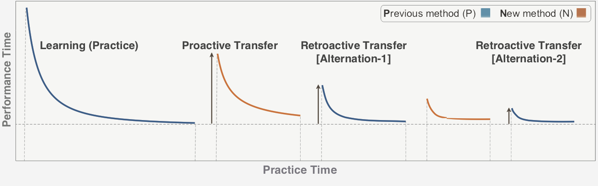

Retroactive Transfer Phenomena in Alternating User Interfaces
What is the impact of learning a new interface on the performance of previously learned interface?
With the multiplicity of interfaces, it is common to use different devices (keyboard layout), operating systems (Windows, Mac) or software (text editor) to achieve the same task. In this project, I investigated retroactive transfer phenomena while alternating between interfaces. Retroactive transfer is the influence of a newly learned interface on the performance of a previously learned interface. First in an interview study, participants were interviewed about their experiences when alternating between different interfaces. Based on interview findings, negative retroactive transfer appears more likely to occur when alternating keyboard layouts than other interfaces. Therefore, I conducted an experiment investigating retroactive transfer between two abstract keyboard layouts with different degrees of similarity. Results indicated that even small changes in the interference interface produced a significant performance drop for the entire previously learned interface.